|
| ||
|
| ||
Robert Carter
Based on a presentation by Mike Tuchen, Ken Goto, and Kevin Shaughnessy
Microsoft Corporation
February 11, 1998
Contents
Introduction
Create and Manage a Site
Starting from Scratch
Customizing Individual Pages
Importing and Modifying Existing Sites
Managing and Reconfiguring Your FrontPage Site
Managing Site Navigation
Manage Content from Multiple Contributors
Samples Demonstrate Content Manager Features
Multi-Browser Client Interface
Direct Content Submission
Submissions That Need Additional Clearance
Let Users Track Their Own Submissions
Viewing Published Documents
Summary
Intranets are rapidly becoming the preferred mechanism companies use to deliver information to their employees, customers, and partners. However, the process of building a site, consistently populating it with useful information, and efficiently delivering it is complex and thus prone to inefficiency and inconsistency. If you're an Internet novice recently asked to manage your company's intranet, this article will outline several different processes you can use to manage each phase of launching and maintaining a coherent, relevant intranet without hiring a staff of ace programmers. We'll discuss how to eliminate common errors such as broken links and inconsistent navigation, how to enable intranet members (with appropriate access levels) to publish documents themselves (saving administrators time fulfilling mundane requests), and how to add advanced features such as search, Dynamic HTML, and frames -- without learning the details of each technology.
To do this, we'll focus on features and tools available in Microsoft® FrontPage® 98 and Microsoft Site Server. Where any stage of the process relies on extending standard features, we'll provide pointers to keep in mind and links to more information.
This article is based on the presentation "Building and Managing Document-Based Intranets," by Mike Tuchen, Ken Goto, and Kevin Shaughnessy at Web Tech·Ed, January 25-28, 1998, in Palm Springs, CA. The "Solutions" series of presentations were geared toward demonstrating the use of multiple, complementary, integrated technologies to solve particular business needs. (Microsoft will present additional Web-related technical-solution sessions in June at Tech·Ed 98 in New Orleans. See the Microsoft Events  site for details and registration information.)
site for details and registration information.)
To begin, we'll build a Web site from scratch using wizards and pre-existing design templates from FrontPage 98. No longer simply a WYSIWYG HTML editor, FrontPage is now an application for creating, publishing, and managing your site. In addition, if you're inheriting an active site with thousands of pages, migrating an existing site to a new design, or have some guidelines that your site must adhere to, FrontPage enables you to import those conventions and operate according to them.
From the FrontPage File Menu, select New, and then select FrontPage Web. The dialog box shown in Figure 1 appears.
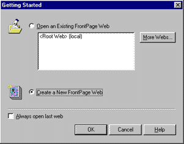
Figure1. Creating a new page
If you want to create a Web page from scratch, select the From Wizard or Template radio button and highlight Corporate Web Presence from the list. FrontPage will then step you through a series of decisions about your site: what kind of information will be displayed (products, articles, pricing information); what information to gather from site visitors (including what format you'd like to receive their input); header and footer items for each page; some basic information about your company; and finally, a graphic theme. (If you are inheriting a site or want to use a design different from the pre-packaged themes, skip ahead to Importing and Modifying Existing Sites.)
Once you've specified the site's overall design, leave the last dialog box prompt checked, and FrontPage will create and display a list of the steps necessary to complete the site, as Figure 2 shows.
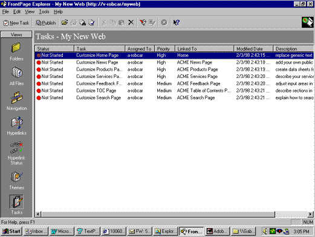
Figure 2. Task list
If you have authority to assign work to other people, you can use FrontPage to assign and manage the completion of those tasks by other people. FrontPage is fully multi-author capable. It can track and manage the activity associated with tasks, and allow multiple people site access at the same time.
Double-click any task that specifies a particular page needing customizing. A dialog box will appear describing the task to be done, its priority, whether work has begun, when work was last done, who is assigned to do the work, and a description of what the task entails.
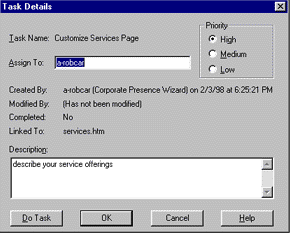
Figure 3. Task list dialog box
Click the Do Task button. The FrontPage Editor launches and opens the page.
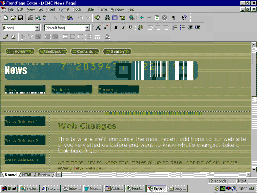
Figure 4. The FrontPage Editor
When the FrontPage Editor first appears, the Normal tab is active, which engages the WYSIWYG editing engine. From this view you can work on your page directly, inserting images, tables, and even frames, with graphic tools and commands. You can switch into the HTML view to check the code, or see how your page will look when published by checking the Preview tab.
Unless you're a hard-core HTML coder, you'll probably spend most of your time in the WYSIWYG area of the Editor. When it comes to creating and deploying site features such as tables and frames, FrontPage makes things easier than learning the nuances of writing HTML directly. For example, the table tool enables you to create tables by drawing them directly on the page, and the eraser tool enables you to remove borders between cells or entire sections of a table. Compared to toggling between TextPad and my browser, frantically checking to see if my tables work yet, the Editor is a huge improvement.
Frames are also much easier to implement. From the Frames menu, you can create a new site that uses one of several framesets outlined in a dialog box. Once the initial page is generated, you can add horizontal or vertical frames by clicking and dragging a line in from the corners of the page. You can then assign what pages populate each frame in the frameset by clicking the Set Initial Page button, or create entirely new pages by clicking the New Page button.
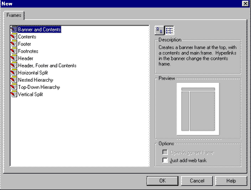
Figure 5. New Frames dialog box showing design options
The FrontPage Editor provides a download time for users accessing your site from 28.8 modems. Instead of guesstimating or using general rules of thumb for your page, you have an accurate measure of just how much time your modem users will wait. Because the biggest culprits in download time tend to be large, complex images, the Editor also provides the ability to re-sample an image to speed up downloads after you've resized it (remember that resizing alone doesn't change the size of an image, it changes just the size of the box it's in).
Even if you're a novice to the Web, FrontPage enables you to add advanced features such as channels and Dynamic HTML to your site without having to learn their technical intricacies.
Dynamic HTML animation controls are activated from the Animation item in the Format tab. Highlight the item you want to animate and then select an effect. That's it. You've got Dynamic HTML. When you view that page in FrontPage Editor, an alert will appear at the top of your page reminding you that not all browsers will be able to show the effect.
Channels are created in FrontPage Explorer. From the Tools menu, select Define Channel. The Channel Wizard will activate and guide you through the seven steps necessary to create a full-fledged channel, including scheduling updates, choosing user notification, enabling screen savers, and recording hit logs. In other words, you can have the same channel features available to people employing a small army of programmers.
Sometimes new site managers don't have the luxury of starting from scratch. For example, you may inherit a partially completed design, or need to make your site look like an existing one. In either case, you can import an entire site into the FrontPage working environment. From the New FrontPage Web item on the File menu, select Import An Existing Web. FrontPage will prompt you for the location of the site you want to import (see Figure 6). When you are importing a site directly from the Internet, you can control the amount of time or space you want to allocate, so you don't end up croaking your hard disk or monopolizing the phone. Once FrontPage finishes importing, you can use FrontPage Editor and the other tools discussed below to update the information relevant to your site.
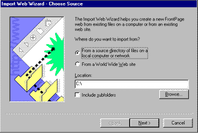
Figure 6. FrontPage dialog box for identifying site to import
Whether the site you're inheriting is only a design mock-up or already populated by hundreds or thousands of pages, it can save on maintenance to create a matching theme using the Theme Designer. Install the Theme Designer by selecting the SDK, Themes, and Designer folders consecutively. Restart FrontPage Explorer and the Theme Designer will appear in the Tools menu. Select the theme that most closely matches your intended design (or start from a blank template), and substitute elements, colors, and images directly from your site's design.
When you use the Theme Designer, you can take advantage of the navigational elements embedded in the pre-packaged FrontPage themes. These elements enable automatic reconfiguration of your site's navigation when you use the management tools described below, and would otherwise require complex scripting to achieve.
Once you have created your site's basic template, FrontPage Explorer offers a variety of ways to view your site that help you manage its growth and organization. Take a look at the Navigation view of our site in FrontPage Explorer.
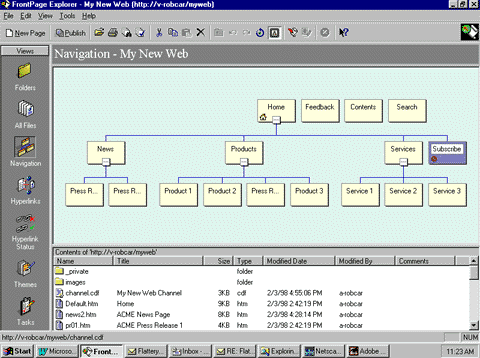
Figure 7. Navigation view of site in FrontPage Explorer
The left margin shows all the views possible of a site: Folders, All Files, Navigation, Hyperlinks, Hyperlink Status, Themes, and Tasks. We'll cover the first five views in turn (Themes and Tasks were covered earlier).
The Navigation view shows a schematic of how your site operates. Our site is presently divided into three sections: news, products, and services. Each section in turn leads to related documents: press releases, product sheets, and service offerings. We've also clicked the Size to Fit icon from the toolbar, so the entire site can be viewed in one pane. Clicking the "-" or "+" boxes at the bottom of a page expands or collapses any subsidiary pages, which is particularly useful as your site gets large and you want to focus on sections of it.
If you want to move pages to another section, FrontPage Explorer offers drag-and-drop repositioning. For example, looking at the graphic above, we see that a press release has been placed in the product section. To reorient it, simply drag the page over to the news section. As you drag, the gray trailing outline will detach itself from the products area and attach it to the news area. Release the mouse button and the page will attach to the news area. All navigation redirects and hyperlinks will also be handled automatically, so you don't have to manually review the page to delete redundant or contradictory buttons.
As your site grows, you will probably revisit earlier assumptions about how people use it, and adapt accordingly. One problem evolving sites face is the isolation of some pages; you simply grow the site away from them by redirecting users elsewhere, or worse, create pages that give users nowhere else to go.
Both of these situations can be identified and addressed in the Files View. The Files View presents a flat (that is, no folders are used to show hierarchy) view of all the pages and files on your site. There is an Orphan category that states whether a file is traversed (refers to, or is accessed by, another file).
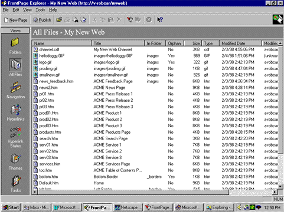
Figure 8. FrontPage Explorer Files view
Click the Orphan category title to group all non-traversed files together. Review the list to see if any files have been isolated from the rest of the site. If they are old pages no longer in use, delete them. If they are new pages that have not had navigation components included, open them in the FrontPage Editor and add the appropriate items.
Be careful when deleting files, however. Make sure you are not deleting files that are used inside pages but aren't referenced explicitly. This is often the case with images and navigational elements FrontPage generates itself (such as bottom.htm) -- if the file is in a folder called _borders, leave it alone.
Alternatively, you may want to impose a different file structure. The Folders View shows the structure of your site using a view very similar to the Windows® Explorer application. This view supports drag-and-drop editing, so you can use your mouse to place files in different folders. FrontPage will scan the file for any embedded hyperlink references and update them accordingly.
Two FrontPage Explorer views help you manage the large number of links you will inevitably create on your site. First, the Hyperlinks view.
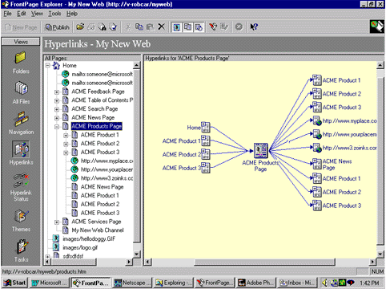
Figure 9. FrontPage Explorer Hyperlink view
The Hyperlinks View consists of two panes. The left pane shows your site within a file hierarchy; a page icon identifies internal pages and links and a globe icon identifies external references. The right pane shows connected pages around the page highlighted in the left pane. Pages referring to it appear on the left; pages it refers to extend to the right. Any known broken links are indicated by a disjointed line segment (in the graphic, the external link to http://www.yourplacemat.com/ is broken).
The Hyperlink Status view offers another way to look at the hyperlinks on your site. It presents a flat view of any hyperlinks you've added, without the links FrontPage generates itself.
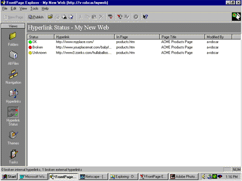
Figure 10. FrontPage Explorer Hyperlink Status view
The Status column shows one of three conditions applying to your links: OK, Broken, or Unknown. Press the Verify Hyperlinks toolbar button (or activate it from the Tools menu). A dialog box will appear that asks which links you want it to check. It's a good idea to check all of your links regularly, especially if you point to links in the outside world, which you have no control over. Otherwise, spot-check recently added links.
I've only scratched the surface of FrontPage; I've presented it in the context of a site management tool. For newly appointed managers developing intranet or Internet sites, it presents an invaluable tool for creating, staging, and managing entire sites.
One of the most frequent uses of intranets is as a repository for sharing documents and files across a company. However, for security reasons, the process for posting these documents typically requires site manager or administrator approval. In a corporation with many contributors (and a productive intranet wants lots of contributors), the relatively mundane task of posting documents can easily consume a huge chunk of time, leaving less time for other design or management tasks with greater long-term benefit.
This section outlines how Microsoft Site Server 3.0 offers a host of features to enable automated document upload and access while maintaining security. On this type of intranet, files are not converted to HTML pages but are available for download in their native format. It is important to emphasize that this publishing model does not remove administrators from the approval process; the tools provide administrators the flexibility to structure where and when they need to be involved in the day-to-day updating of the site's content.
In response to feedback from site administrators and managers, Microsoft developed the suite of samples included with Site Server to demonstrate the features available and provide working templates that streamline the development process of companies using Site Server. We'll use a sample site to present the features of the Content Manager tool.
This discussion will focus on the features available to a user of the system rather than an administrator. As administrator, you can configure the Content Manager tool to achieve the stated end-user performance.
Companies using Site Server as their intranet solution have the flexibility to use any recent versions of the major browsers on the market. The interface is entirely HTML-based.
The sample intranet begins with a welcome page that provides pointers to each of its major areas: Welcome, Company Information (containing press releases, case studies, and awards), News (headlines and job postings), Products (datasheets, white papers, and specifications), Submit New Content, My Content, and Editorial View.
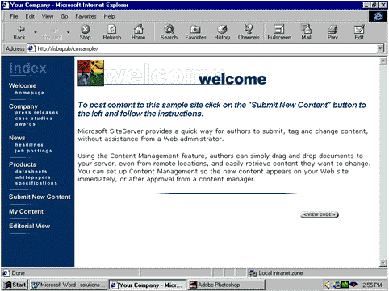
Figure 11. Content Manager sample site Welcome page
We'll show the process for submitting two kinds of content: a specification document, which the user will have clearance to post directly; and a job posting, which will need approval from human resources.
To submit content, click the Submit New Content graphic. A page like the following will appear.
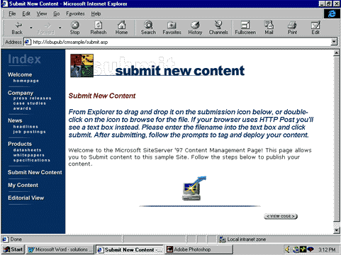
Figure 12. Submit New Content sample page
Double-clicking the computer icon will activate an ActiveX® control (if the control is not loaded, it will download automatically). A file-selection dialog box will appear (a text post if the server uses the HTTP Post method). When the user selects the file and clicks the Open button, the file is submitted to the server. Site Server will respond with a page asking the user where the content should go.
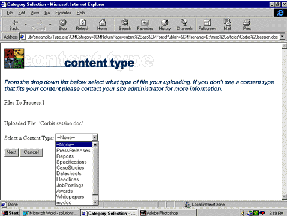
Figure 13. Content Manager document publishing classification
Once the user selects and submits where the content should go, Site Server will respond with a form asking for additional data specific to the area where the content will be posted. For our example, it could ask about the "stability" of the specification (draft, first review, final, and so forth), the specific product it concerns, and any other classifications or background information useful to other users. Again, the categories used will depend on the specifics of the company using it.
Because the user has permission to directly submit documents, once the Submit button is pressed, the document will be immediately available for anyone accessing the specifications page.
Sometimes you don't want everyone to be able to post documents to an area. For example, all job postings might need to be cleared by a representative from Human Resources. Site Server can make proposed document submissions available only to users with the authority to approve them.
The submission process for an item that needs additional clearance is identical to that for one that doesn't. That is, the user is asked to identify the file being submitted and respond to a series of form-based questions. The only difference is that the file is not immediately "live." Instead, publication is delayed until someone has reviewed and approved it.
To initiate the approval process in our sample application, a user with sufficient clearance clicks the Editorial View graphic. Site Server will respond with a page that lists all the proposed submissions.
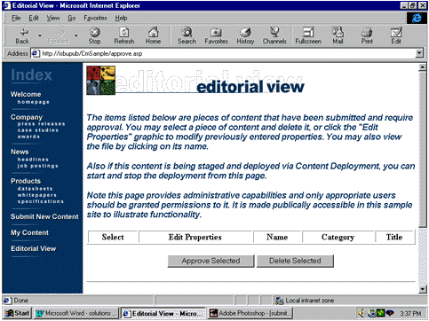
Figure 14. Editorial View screen shot of submissions needing approval
The reviewer can access and review each file by clicking it. Once the piece has been deemed satisfactory, the reviewer highlights and clicks the Approve Selected button. The document is immediately available on the intranet.
Of course, most of the pieces submitted and published on an intranet are solicitations for feedback and refinement. As such, they will be continuously modified and updated. Site Server provides the ability to automatically pull content when it gets out-of-date. Clicking the My Content button queries Site Server to return all the pieces that user has posted. A full list of submissions is presented. If the document was submitted to the wrong area of the site, the user can fill out the forms again to redirect the document to the appropriate place. If the document is outdated, they can delete it by clicking a box and pressing the Delete Selected button.
Once the documents are published, users can click the documents they want to download, just as they would on any Internet site. If the document is OLE-enabled or uses a plug-in loaded into the browser, the document will load directly in a new browser window. Otherwise, the user will be prompted to select which application to associate with the file, and it will open directly.
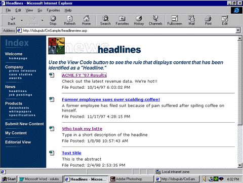
Figure 15. Sample download page
Clearly, intranet and Internet publishing and management tools are expanding to meet the needs of the companies that increasingly rely on them. FrontPage has expanded from a page-creation tool to a page-creation and site-management tool. Like any application worth its salt, it enables the user to adopt complex features without a graduate degree in programming.
Similarly, Site Server 3.0 is designed for out-of-the-box functionality. Users can design and deploy fully functional sites with a minimum of set-up time using the included templates and wizards. Content Manager, a tool that ships with Site Server, also provides flexible content-deployment schemes for administrators. Users can now directly submit and track their own submissions on an intranet, approval processes can occur without multiple postings, and administrators can spend their time on other pressing tasks.
For more information, see the FrontPage  site and the Site Server
site and the Site Server  site.
site.
 Back to the Web Tech·Ed Solutions home page
Back to the Web Tech·Ed Solutions home page
Did you find this material useful? Gripes? Compliments? Suggestions for other articles? Write us!
© 1999 Microsoft Corporation. All rights reserved. Terms of use.